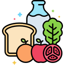

CRIAMOS UM PLANO PERSONALIZADO PARA
RESOLVER SUA EJACULAÇÃO PRECOCE EM 21 DIAS
Com base nas suas respostas, desenvolvemos um PROTOCOLO NATURAL que vai atacar diretamente as causas da sua ejaculação precoce em até 21 dias.

dos homens com perfis semelhantes ao seu melhoraram sua vida íntima aplicando o PROTOCOLO VITAMAX.
Um protocolo de saúde personalizado para homens
SOLUÇÃO COMPLETA
PROTOCOLO
VITAMAX
O PROTOCOLO VITAMAX é uma solução cientificamente comprovada que já ajudou milhares de homens a superarem os mesmos problemas que você enfrenta agora.

Kegel

Rotinas

Controle
✔️ Técnicas exclusivas de fortalecimento do assoalho pélvico, essenciais para melhorar seu controle ejaculatório e capacidade de manter ereções fortes.
✔️ Exercícios personalizados para elevar seus níveis de testosterona, restabelecendo seu equilíbrio hormonal de forma natural e segura.
✔️ Controle emocional para combater a ansiedade para eliminar o estresse relacionado ao desempenho e aumentar sua confiança.
✔️ Estratégias de recuperação do fluxo sanguíneo, melhorando sua performance sexual a cada semana.


Os exercícios de Kegel e fortalecimento do Assoalho Pélvico são recomendados internacionalmente:

PROTOCOLO VITAMAX
Melhore a sua
Saúde Sexual
Ao adquirir o Protocolo Vitamax, você terá:
- Plano de Treinamento Personalizado para fortalecimento muscular e controle ejaculatório.
- Aulas Gravadas por especialistas para orientar cada etapa do seu progresso.
- Práticas clinicamente validadas para melhorar seu desempenho na cama
-  Orientações de Dieta e Suplementação para aumentar sua testosterona de forma natural.
- Meditações e Técnicas de Relaxamento para eliminar a ansiedade de desempenho.

Veja os resultados obtidos dos nossos usuários:
✔️ Aumento da energia sexual e libido
✔️ Ereções mais firmes e duradouras
✔️ Controle completo sobre sua ejaculação
✔️ Redução significativa do estresse e da ansiedade
✔️ Melhora da confiança e da autoestima
Com base em pesquisa realizada 1 mês após o início do Protocolo
Veja alguns depoimentos dos nossos usuários:
De R$97 por apenas
R$ 29,90
ou 6x de R$ 6,83
QUERO O PROTOCOLO!ATENÇÃO: essa oferta é por tempo limitado e pode se esgotar a qualquer momento
Risco Zero
Como temos certeza de que este programa é de alta qualidade, oferecemos uma garantia.
É muito simples: se no prazo de 7 dias você não notar resultados, basta solicitar o reembolso.
Você não tem risco algum.